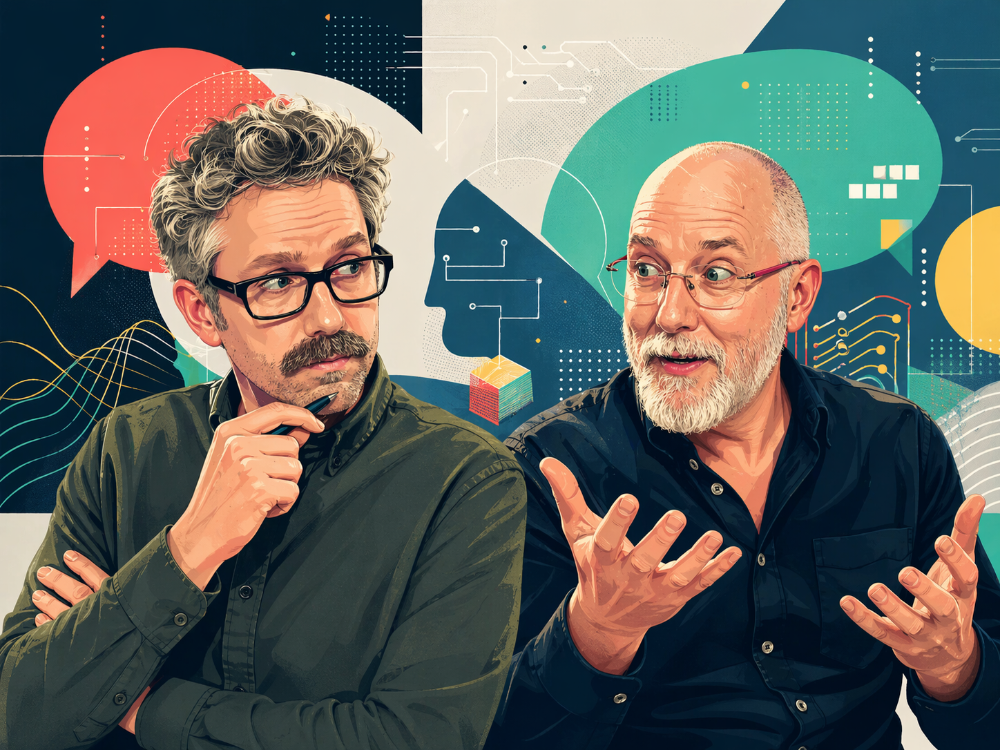

Latest episode
EP96
OpenAI vs Anthropic, Cyber Models, and AI Job Subcontracting
OpenAI and Anthropic claim they are deploying cyber models safely. They just have very different ideas about what safe means.
Open on YouTubeWeekly AI news with teeth
Justin Collery and Frank Prendergast host a weekly clash over the wildest AI news. Expect disagreement, humour, strong opinions and very little patience for tidy conclusions.

EP96
OpenAI and Anthropic claim they are deploying cyber models safely. They just have very different ideas about what safe means.
Open on YouTubeAudio player embedded from Buzzsprout.
Two hosts, two viewpoints
Justin pushes towards capability, scale and speed. Frank pulls the conversation back to people, power, incentives and risk.
Technical optimist
Believes we should build boldly, move quickly and let the benefits arrive. Sees AI as one of the greatest levers for human progress.
Sceptical humanist
Questions the hype, follows the incentives and asks what happens to trust, culture, work and people when systems move too fast.
What the show gets into
The show starts with the latest AI news and follows the loose threads until something interesting falls apart.
AGI timelines, reasoning, agents, benchmarks, hallucinations and the question of whether anything is actually thinking.
Safety, alignment, corporate incentives, national policy, model access and whether guardrails save us or slow us down.
Jobs, productivity, skills, inequality, automation and the awkward question of who gets squeezed when AI gets useful.
Deepfakes, synthetic media, political manipulation, cultural bias and the erosion of shared reality.
The central tension
The podcast lives in the space between acceleration and human-centred ethics: what AI can do, who benefits, who pays, and whether society can keep up.
Recent episodes